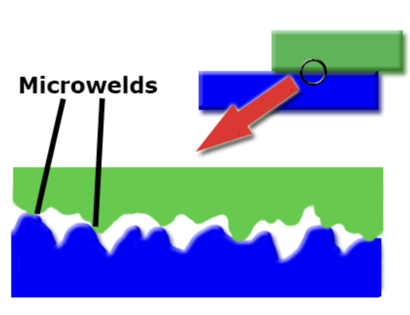
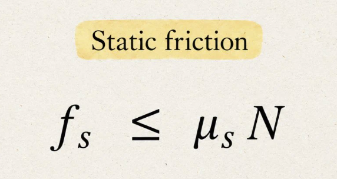
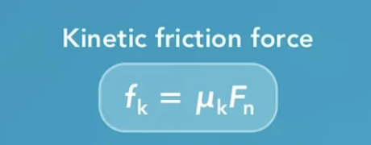

AP Physics 1: 2.7- Kinetic and Static Friction
What is Friction?
- Friction is a force that acts between two
objects that are in contact with each other. Friction is a force
that always opposes or prevents motion.
- Friction forces arise in the microscopic level. Every object has
little bumps (called microwelds). When the bumps on one surface
gets stuck against the bumps on another surface, friction occurs.

Static Friction
- Static friction is the force that acts on an static object to prevent it from moving
- If someone pushes/pulls an objects and it doesn't move, you have experienced static friction
- Below is the formula used for static friction:

- μs refers to the coefficient of static friction (and is different per object).
- N refers to the normal force of the object (in a horizontal surface, it's opposite mg).
- The reason for the ≤ symbol comes down to the fact that static friction will always push
back with the same force an external force pushes it to prevent movement. It
will continue pushing back with the same force until it reaches the maximum
which is μsN. Once the maximum is reached, the block starts to move and kinetic
friction occurs.
Kinetic Friction
- Kinetic friction is a force that acts on a moving object in the opposite direction as its motion.
- This can be tricky because it has to occur between two surfaces sliding relative to
each other (not just something that looks like its moving).
- For example, if you consider a car on the road, the tire's contact point on the road doesn't move
relative to the road. It
just touches it, and as the tire turns, a new contact point touches the road. So, this is not kinetic
friction.
-
But, if you consider sliding a book on a table, that is an example of kinetic friction.
- The formula is very similar to static friction:

- Kinetic friction is always a constant force unlike the ≤ in the other formula.
- fk is the denotation for kinetic friction in the AP curriculum.
- μk refers to the coefficient of kinetic friction
- Fn refers to the normal force.
Apply Your Knowledge